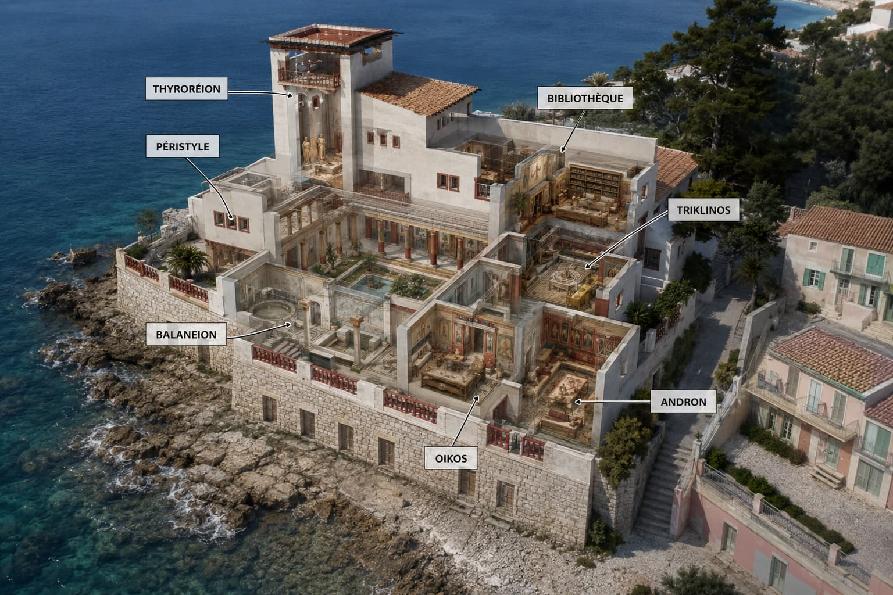
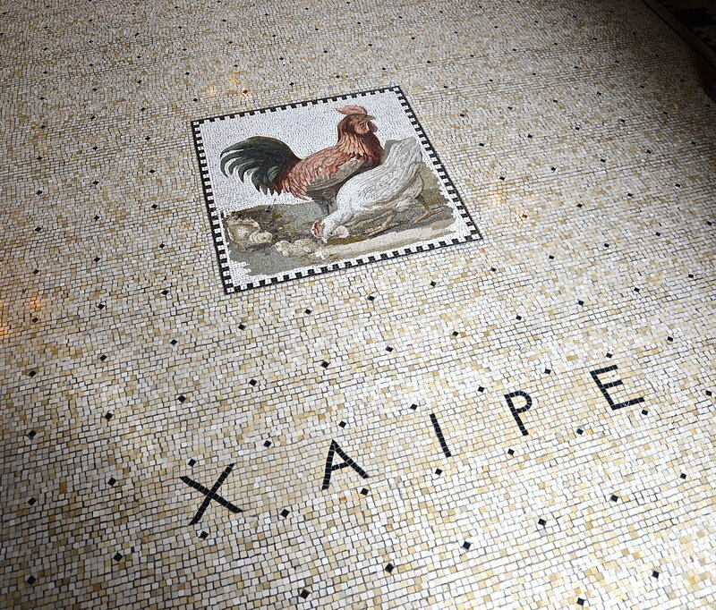
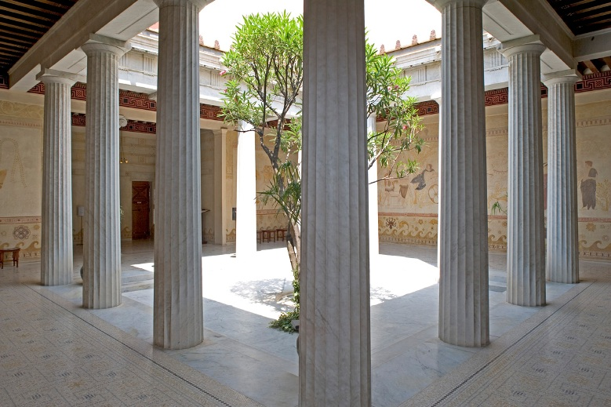
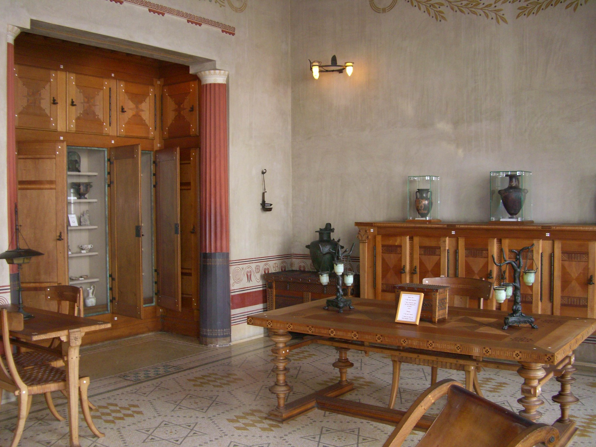
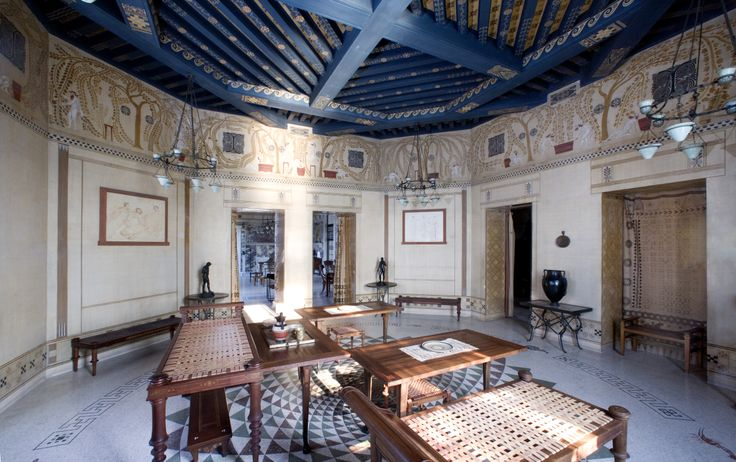
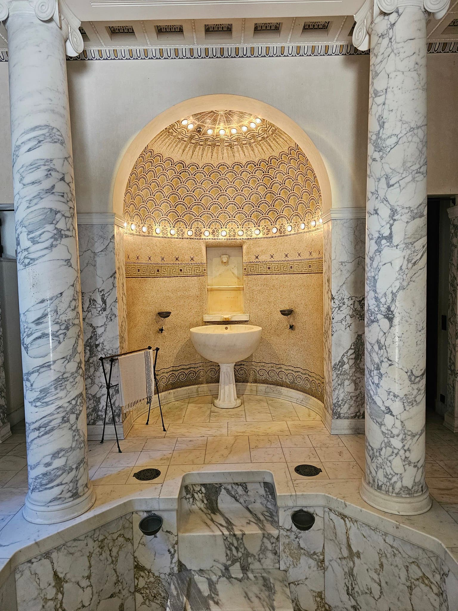
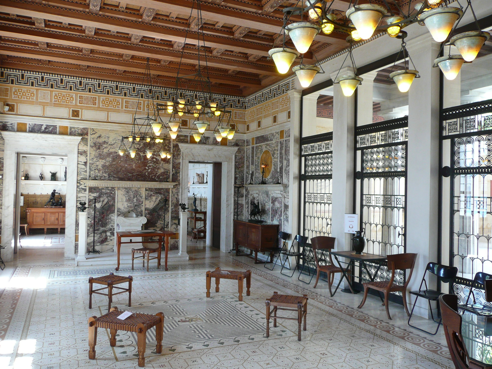
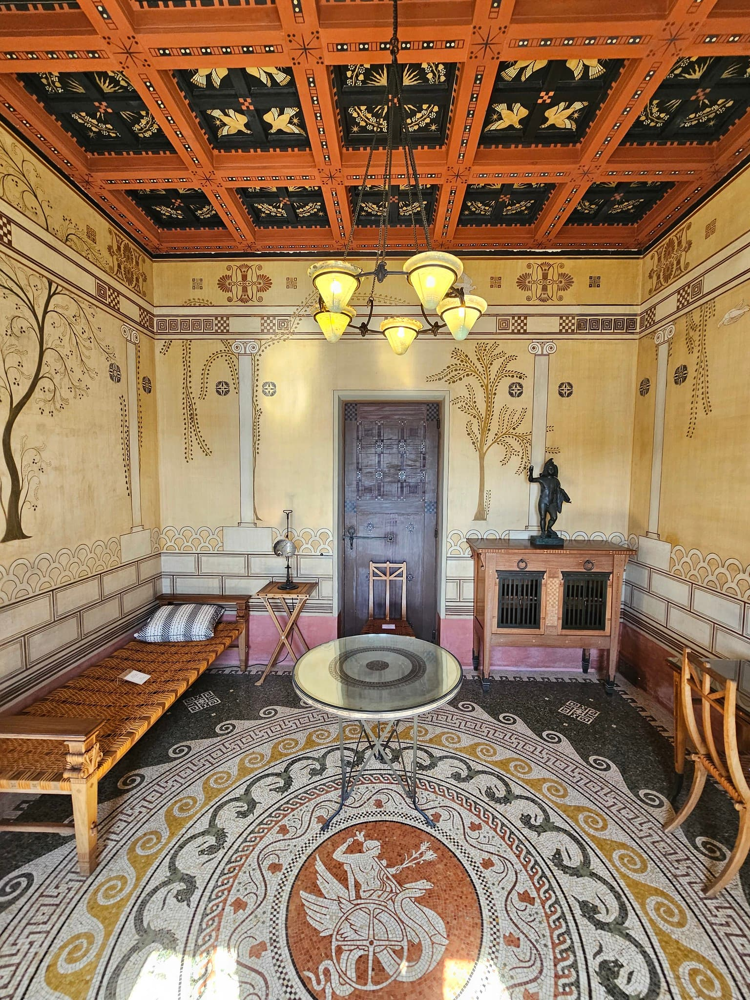

Villa Kérylos in Seven Spaces
Click a room on the plan to open its analysis — what is Greek, what is 1902, what the gap reveals

Where does Greece end
and 1902 begin?
Théodore Reinach and Emmanuel Pontremoli made a specific decision in each room of the Villa Kérylos: what to reconstruct with archaeological precision, what to concede to modern necessity, and where to draw the line between the recoverable and the irrecoverable.
Each space below has three layers of analysis: what is Greek (the archaeological source), what is 1902 (the modern element), and what the gap reveals (the question that space poses about the relecture).

The thyroréion is the transitional zone between the public world and the domestic interior. In ancient Greek houses, this space was marked by apotropaic devices. Reinach placed two markers at Kérylos: carved above the entrance, in Greek, XAIPE — "Rejoice" — the standard greeting of the ancient world. At the floor of the vestibule, a mosaic shows a cock, a hen, and her chicks with the inscription KAI CY — "Thou too" — an apotropaic formula returning the visitor's gaze, reminding them they are also mortal, also subject to time.
The visitor who reads XAIPE at the entrance is greeted in a language almost none of them can read. The inscription does not welcome — it distances. It places the visitor outside their own time and language. This is the first anachronism of the villa, placed at the threshold deliberately: entry requires acknowledging that one is entering a space governed by different rules.
The KAI CY mosaic is the most philosophically charged object in the villa. KAI CY says: yes, but you too. You too are a mortal, crossing a threshold between one world and another. The apotropaic formula that the Greeks used to deflect envy is also, here, a reminder that the distance between the visitor and the ancient world is absolute.
What does it mean to be welcomed in a language you cannot read — and to have that impossibility be the welcome?

The peristyle is the organisational heart of the ancient Greek house: an open courtyard surrounded by a colonnade around which all principal rooms are arranged. Pontremoli modelled Kérylos's peristyle directly on the houses of Delos — twelve monolithic columns of Carrara marble, fluted in the Ionic order, surrounding a space open to the sky. The floor mosaics and painted friezes follow archaeological models precisely.
The laurel-rose tree at the centre was chosen by Reinach in 1902 for its visual effect under the particular light of the Baie des Fourmis. The peristyle is the space in the villa where the anachronism is least visible — and this very concealment is a statement: Reinach chose his most scrupulous reconstruction for the space most visitors would remember. The face of the villa is its most Greek face.
The peristyle demonstrates that total visual reconstruction is possible — for a moment, the visitor genuinely does not know whether they are in the second century BC or the twentieth century AD. This disorientation is the relecture at its most successful — and most fragile. It depends entirely on suppressing all evidence of modernity. Step outside the peristyle, and 1902 reasserts itself immediately.
If total reconstruction is possible in one space, why is it impossible in the whole house — and what does the difference tell us about which aspects of the past are recoverable?

Dedicated to Athena and oriented east to receive morning light. Reinach worked standing at a high desk copied from a model on a vase in the Museum of Berlin. The bronze lamps on the tables are reproductions of pieces in the Archaeological Museum of Naples. The standing posture, the orientation, the lamp models: all archaeologically sourced.
The oak armoires contain 19th and 20th-century scholarship with footnotes, critical apparatus, indices — the entire apparatus of modern philology. Reinach was reading Homer through Wilamowitz, through Jebb, through the discoveries at Delos he himself had participated in. The electric lamp on the wall — a bronze applique with modern bulbs — makes no attempt at concealment: ancient form, modern function.
The library is the room that most clearly shows what the Villa Kérylos actually is: not a reconstruction of Greece but a reconstruction of the scholarly relationship to Greece. What is housed here is not ancient learning but modern learning about ancient learning. The books it contains are themselves relectures of the world the room attempts to evoke.
What does it mean to study the ancient world from inside a reconstruction of it — and does the reconstruction help or hinder the scholarship?

The triklinos — "the room of three couches" — is where guests reclined on klinai (leather couches) at the height of the tables. Reinach reproduced this practice: guests dined reclining, wore chitons (Greek tunics), and were forbidden to use forks — eating with their fingers from silver platters copied from ancient models. The octagonal plan, the gilded ceiling, and the mosaic floor follow Pompeian and Hellenistic models.
The absence of forks is not a concession to discomfort — it is a decision about where the reconstruction stops. Reinach bans the visible marker of modern table manners. But behind the walls, modern boilers supply hot water to the thermes below; the electric lamps disguised as ancient bronze fixtures illuminate the dinner. The boundary is exact: what the eye sees is Greek; what the infrastructure requires is modern.
The triklinos is where the relecture is most performative — it requires active participation from the inhabitants. Eating with one's fingers in a linen tunic is a modification of behaviour, a temporary submission to the reconstruction's discipline. The triklinos reveals that the relecture, at its most serious, is not just aesthetic but a way of living — requiring decisions about which parts of the self to suspend.
Is eating with one's fingers an act of historical fidelity or theatrical performance — and does the distinction matter?

Dedicated to the Naiads, nymphs of fresh water and fountains. Pontremoli constructed a space of extraordinary precision: marble Arabescato columns, a semicircular apse with gold mosaic cupola, marble basins, the loutèrion (central washing basin) — all following ancient models from Naples, Pompeii, and Delos. The decorative programme — fish scales in gold mosaic, a lion's head fountain, the Greek key border — is reconstructed from archaeological sources.
The Balaneion contains the villa's most radical concealment: piped hot running water. The ancient Greeks heated bathwater in cauldrons over fires. Reinach's thermes have hot water from modern boilers hidden in the basement. The round bronze discs in the marble floor — visible in the photograph — are modern drains. The electric light in the cupola is disguised as natural mosaic illumination. 1902 is most completely hidden here — and most completely present.
The Balaneion demonstrates Reinach's logic precisely: the concession to modernity is made at the level of the body's needs — warmth, hygiene — and concealed at the aesthetic surface. The reconstruction is total in what the eye sees; modern in what the body requires. The boundary of the relecture is drawn at the point where the body's limits are reached.
Is the concealment of modern infrastructure intellectual honesty — or a kind of bad faith that undermines the whole project?

The andron was the men's reception room — for intellectual discussion and formal household life. At Kérylos it is the grandest space: walls of mauve Serravezza marble with inlaid Siena yellow medallions, teak coffered ceiling, a floor mosaic with Theseus wrestling the Minotaur. The "Graeco-Egyptian throne" by Bettenfeld presides over the room. A marble altar "to the unknown god" stands at one end. Everything follows ancient models of maximum formality.
The electric chandeliers — visible in the photograph as rows of inverted amber-glass cone-shades — make no pretence of being ancient. They are Belle Époque fixtures, unmistakably of their era. Unlike the Balaneion, Reinach chose here not to disguise the modern element. The contrast — ancient marble and mosaic, modern electric light — is not inadvertent. Intellectual life in 1902 requires adequate light for reading and conversation.
The Andron's visible anachronism defines the limit of the reconstruction's pretension. Reinach is not attempting to deceive. The chandeliers are honest in a way the concealed plumbing of the Balaneion is not — or honest in a different way. The Andron says: we are doing something impossible, we know it, and the electric light is the proof.
Is it more honest to display the anachronism or to conceal it — and does the answer change depending on which room you are in?

The oïkos was the family's private salon, dedicated to Dionysus — god of wine and theatre. Theatrical masks appear in the fresco programme. The ceiling in black lacquered teak with gilded birds evokes the festive Dionysiac world. The floor mosaic with its circular central panel follows Hellenistic domestic models. A round table on a single pedestal occupies the centre.
Against the south wall, built into a cabinet of inlaid lemon-wood, is a piano — a Pleyel, signed 1913, acquired after the villa's completion. It is invisible until the cabinet doors are opened. Reinach had the cabinet made specifically to contain the piano while maintaining the visual coherence of the Greek interior. The Pleyel is the most radical anachronism in Kérylos: not a lamp or a drain, but a complete musical instrument representing a tradition two millennia younger than the world the room evokes.
The hidden Pleyel defines the outer limit of the relecture. Reinach could eliminate forks, but he could not eliminate music — the domestic piano was too central to Belle Époque family life to be surrendered. He concealed it instead. This is simultaneously an acknowledgement that some aspects of modern life are constitutive — they cannot be reconstructed away — and a refusal to display that acknowledgement. The oïkos contains the most modern object in the house: a piano that cannot be played without revealing that the relecture has limits it chooses not to name.
The hidden piano admits that the relecture cannot be total, while refusing to display that admission. Is this the most sophisticated position available — or a contradiction that undoes the whole project?
On the three-layer reading: These attributions are analytical propositions. In some spaces, the Greek and the modern are entangled in ways that resist clean separation. The analysis follows the argument of FIG–04 · The House That Greece Never Built and TC–10 · The Relecture. Cutaway image: generated for analytical purposes; spatial positions of rooms are approximate but broadly consistent with the official floor plan. Photo credits: Péristyle: Christophe Recoura / CMN; Andron: faun070, Flickr, CC BY-NC-SA 2.0; other room photos: [Flickr users to be credited by publisher] under Creative Commons licences.
Sources: Adrien Goetz, La Villa Kérylos (RMN/CMN, 2001); Centre des monuments nationaux, Villa Kérylos — guide de visite (2016); Cahiers de la Villa Kérylos, Persée, 2009 & 2017. Part of Urwork FIG–04 · urwork.substack.com · urwork-encyclopedia.github.io